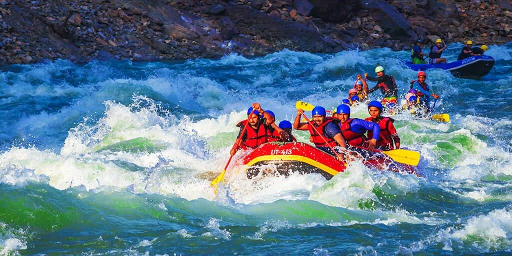
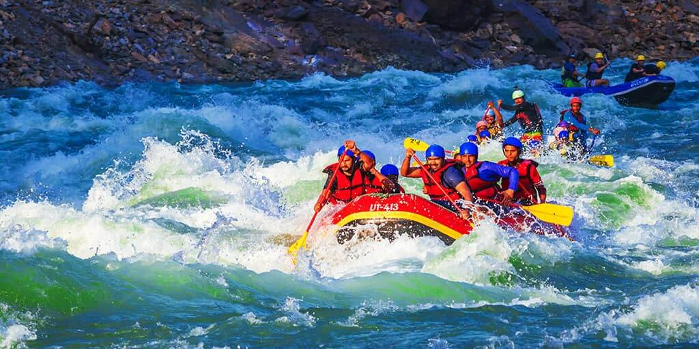

History
Founded in 2003 by David, the company started as a small venture offering thrilling rafting experiences on local rivers. It quickly gained popularity, expanding its offerings to include various trips for all skill levels.
As demand grew, the company prioritized safety, implementing rigorous training and protocols. It also committed to environmental conservation, partnering with local organizations for river clean-up initiatives.
Key milestones include expanding to new rivers, receiving industry awards, and launching educational programs about river ecosystems.
Today, the company remains dedicated to adventure, community involvement, and sustainability, continually innovating to enhance guest experiences while preserving the beauty of nature.

 
